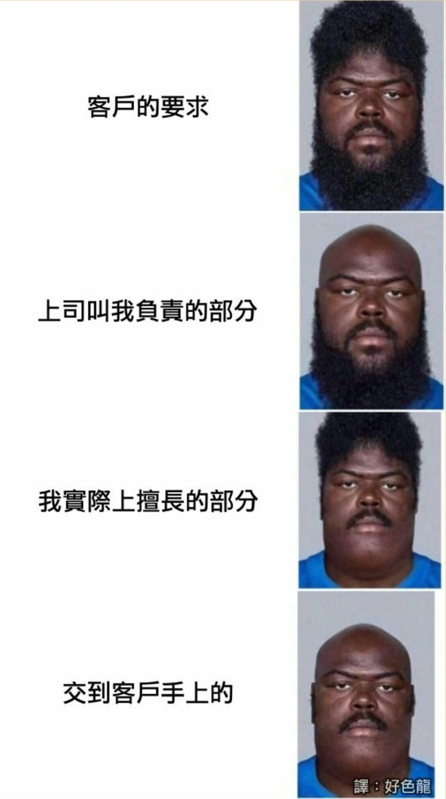
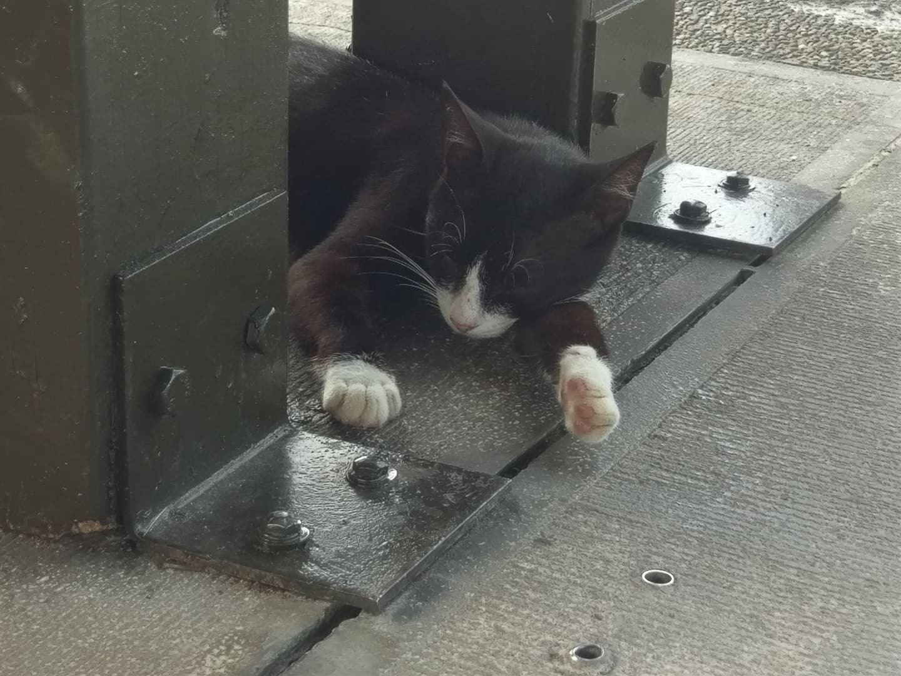

christine955<!--
	以下為用到的tag : 
		<div>...</div> : 產生區塊
		<p>...</p> : 產生段落
		<strong>...</strong> : 粗體文字
		<h1>...</h1> : 產生標題(h1為最大字體，h6為最小字體)
		 : 插入圖片
		<br> : 文字換行
		<hr> : 插入分隔線
-->

<!DOCTYPE html>
<html>
	<head>
		<meta charset = "UTF-8">
		<title>My Web Page!</title>
		<style>
			h1
			{
				font-weight : bold;
				color : gray;
			}

			#first
			{
				border : 2.5px black solid;
				background-color : LightBlue;
				font-size : 12px;
			}

			.type
			{
				font-weight : bold;
				color : blue;
			}
		</style>
	</head>
	<body>
		<div id = "first">
			<p><strong>系級</strong> 工管四</p>
			<p><strong>學號</strong> B04701157</p>
			<p><strong>姓名</strong> 涂穎珊</p>
		</div>

		<h1>Link</h1>
		<a href="https://christine955.github.io/rlads/another.html">another.html</a>

		<h1>一段<span class = "type">文字</span></h1>
		<table border = "1">
			<tr>
				<td>
					生活小撇步<br>
					白襯衫容易發黃<br>
					一般的洗衣精很難洗乾淨<br>
					不少人為此感到頭痛<br>
					其實，不仿在洗的時候<br>
					<br>
					吃顆頭痛藥，頭就不會那麼痛了<br>
				</td>
			</tr>
			<tr>
				<td>
					貝多芬在32歲那年兩耳失聰<br>
					親友們都勸他趕快去看醫生以免耽誤治療<br>
					<br>
					但他就是聽不進去<br>
				</td>
			</tr>
		</table>
		<hr size="2px" color = black>

		<h1>來點<span class = "type">梗圖</span></h1>
		<br>
		<hr size="2px" color = black>
		<br>
		<hr size="2px" color = black>
		<br>
		<hr size="2px" color = black>

		<h1>來點<span class = "type">狗狗貓貓</span></h1>
		<br>
		<hr size="2px" color = black>
		<br>
		<hr size="2px" color = black>
		<br>
		<hr size="2px" color = black>
		<h2>還有<span class = "type">兔子</span></h2>
		<br>
	</body>
</html>
